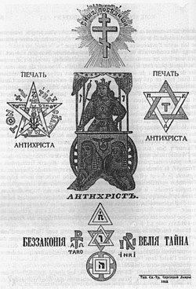
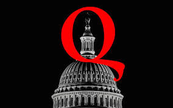

Les différentes méthodes de propagation des théories du complot


On peut différencier deux périodes distinctes dans la propagation des théories du complot, ces périodes étant :
De nombreuses théories du complot furent créees avant l'arrivée d'Internet, une des plus grandes etant le livre nommé "Les Protocoles des Sages de Sion". A partir de l'existence de ce livre crée par la police secrète du tsar et publié en 1903, on en déduit que différentes théories du complot ont pu être propagées par les librairies ou même la presse elle même. Cet ouvrage spécifique eu un impact majeur sur les populations visées.
L'arrivée d'Internet accentue énormément le phénomène de propagation des différentes théories du complot, on retrouve notamment la diffusion à travers les médias de masse ou bien des personalités publiques, quelques exemples que l'on pourrait citer seraient QAnon (première image), Jean-Marie Bigard (deuxième image) ou bien Alex Jones (troisième image), tous très (ou trop) influents dans leurs communautés respectives.
